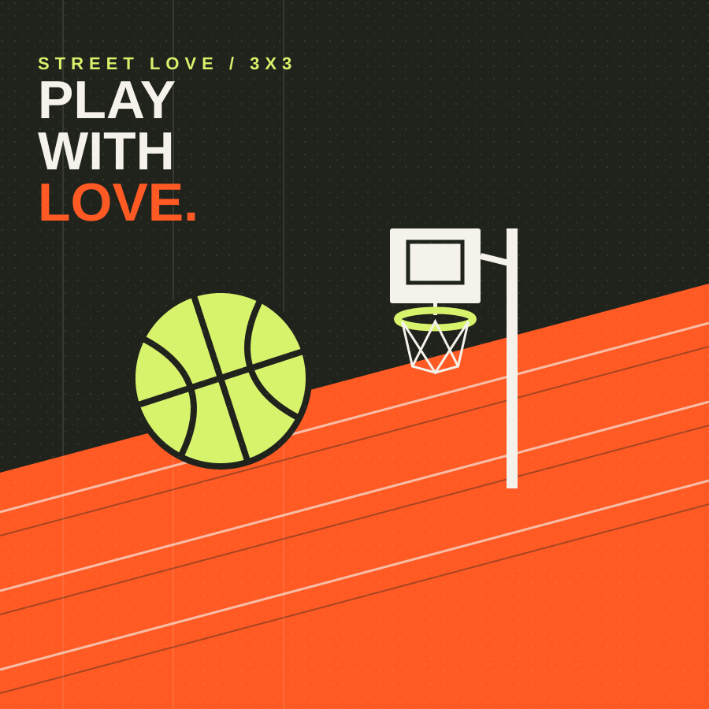

Mixité et inclusion
Les inscriptions sont ouvertes à tous les genres. Les équipes et formats sont organisés pour encourager la participation et éviter les comportements discriminatoires.
02 / LE CONCEPT
Street Love 3x3 est un tournoi de basket urbain fictif imaginé pour réunir les générations, les niveaux et les communautés autour d'un terrain partagé.

L'IDÉE
Le basket 3x3 se joue sur un demi-terrain avec trois joueurs par équipe et un seul panier. Son rythme rapide laisse une grande place à la lecture du jeu, à la créativité et à la solidarité entre coéquipiers. Il permet de multiplier les rencontres et de maintenir une atmosphère vivante tout au long de la journée.
Street Love 3x3 reprend cette énergie pour proposer un événement accueillant et accessible. La performance est valorisée, mais elle ne définit pas à elle seule la réussite du tournoi. L'envie d'essayer, l'encouragement, le respect et le plaisir partagé font aussi partie du jeu.

L'ESPRIT STREET LOVE
Le streetball est aussi une culture : les gestes techniques, les styles, la musique, les encouragements et les histoires partagées autour du terrain. Chaque personne apporte sa personnalité, et le collectif donne au jeu toute sa dimension.
Le tournoi veut préserver cet esprit tout en offrant un cadre organisé, sécurisé et respectueux pour toutes et tous.
NOS ENGAGEMENTS
Les inscriptions sont ouvertes à tous les genres. Les équipes et formats sont organisés pour encourager la participation et éviter les comportements discriminatoires.
Le projet prévoit des formats adaptés aux âges et aux niveaux, afin que les jeunes, les adultes et les débutants puissent trouver une manière de participer.
Les joueurs, arbitres, bénévoles et spectateurs contribuent à une ambiance positive. Les insultes, le harcèlement et les discriminations n'ont pas leur place.
Des animations, de la musique et des temps de rencontre complètent les matchs pour célébrer la culture du basket de rue.
LE PLUS IMPORTANT ?